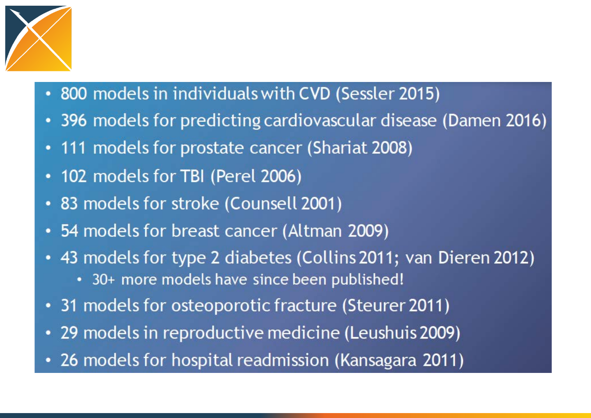
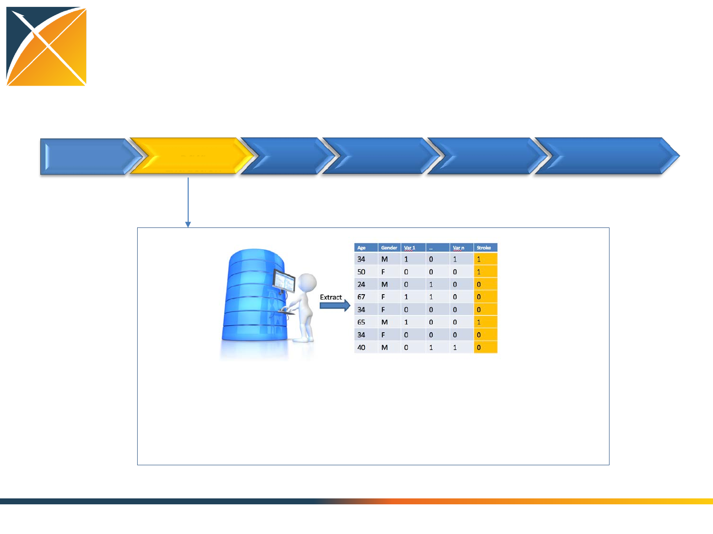

Journey toward Patient-Level
Prediction
Peter R. Rijnbeek, PhD
Department of Medical Informatics
Erasmus MC, Rotterdam, The Netherlands
Jenna Reps, PhD
Janssen Research and Development

Peter R. Rijnbeek, PhD
Department of Medical Informatics
Erasmus MC, Rotterdam, The Netherlands
The Journey toward Patient-Level Prediction

Prediction is difficult,
especially about the
future !
Problem definition
Among a population at risk (Depression), we aim to predict which patients at a
defined moment in time (t=0) will experience some outcome (Stroke) during a
time-at-risk (1 year). Prediction is done using only information about the patients
in an observation window prior to that moment in time.
Growing interest in prediction
modelling
0
500
1000
1500
2000
2500
3000
3500
4000
4500
5000
1980 1985 1990 1995 2000 2005 2010 2015
Patient-level prediction models are
already in clinical practice
CHADS2 for patients with
atrial fibrillation:
+1 Congestive heart failure
+1 Hypertension
+1 Age >= 75
+1 Diabetes mellitus
+2 History of transient
ischemic attack
JAMA, 2001; 285: 2864-2870
Evaluating the predictive accuracy of
CHADS2
Thromb Haemost 2011; 106: 528–538

Current Stroke Guidelines
Recommendation:
In patients with nonvalvular atrial fibrillation,
the CHA2DS2-VASc score is recommended for
assessment of stroke risk
CHA2DS2-VASc Risk Score
CHF or LVEF < 40% 1
Hypertension 1
Age > 75 2
Diabetes 1
Stroke/TIA/
Thromboembolism 2
Vascular Disease 1
Age 65 - 74 1
Female 1

Reviews of published prediction models
Courtesy of Gary Collins
Current status of prediction modelling
Goldstein BA, J Am Med Inform Assoc. 2016.
•Median of 27 predictor variables
•Median sample size 26100
•26/107 external validation
•Longitudinal information is not used
Current status of prediction modelling
•Inadequate internal validation
•Small sets of features
•Incomplete dissemination of model and results
•No transportability assessment
•Impact on clinical decision making unknown
Relatively few prediction models
are used in clinical practice

OHDSI aims to develop a systematic process to
learn and evaluate large-scale patient-level
prediction models using observational health data
in a data network
Mission for Patient-Level Prediction
Evidence
Generation
Evidence
Evaluation
Evidence
Dissemination
Prediction Model Development
Problem
Definition
Data
Extraction Training Internal
Validation
External
Validation Dissemination
Problem pre-specification. A study protocol should
unambiguously pre-specify the planned analyses.
Transparency. Others should be able to reproduce a study in
every detail using the provided information. All analysis code
should be made available as open source on the OHDSI Github.

Prediction Model Development
Problem
Definition
Data
Extraction Training Internal
Validation
External
Validation Dissemination
Data is extracted from the OMOP CDM using the Feature Extraction R-Package.
Data characterization is required before modelling. Tools are being developed in
the community to facilitate this.
A data cleaning step is recommended, e.g. to remove outliers in lab values.
Prediction Model Development
Problem
Definition
Data
Extraction Training Internal
Validation
External
Validation Dissemination
Model training and Internal validation is done using a train
test split:
1. Person split: examples are assigned randomly to the train
or test set, or
2. Time split: a split is made at a moment in time (temporal
validation)
Train set Test set
2014-01-15
Model Training
Test set
Training set
Internal validation
1. Which models?
2. How to evaluate the model?
Models
Regularized Logistic Regression Random Forest
Gradient Boosting Machines
Model training is an empirical process in which multiple models are compared
Many other models for example:
K-nearest neighbors
Naïve Bayes
Support Vector Machines
Etc.
Patient-Level Prediction Roadmap
Evidence
Generation
Evidence
Evaluation
Evidence
Dissemination
Evidence
Generation
Evidence
Evaluation
Evidence
Dissemination
Protocol Sharing
CDM Extractions
Code Sharing
Train / Test split
Model Validation
What makes a good model?
Discrimination: differentiates between those with and without the event, i.e.
predicts higher probabilities for those with the event compared to those who
don’t experience the event
Calibration: estimated probabilities are close to the observed frequency
How to assess discrimination?
Predicted
1 0
Observed
1 True Positive
(TP)
False Negative
(FN)
0 False Positive
(FP)
True Negative
(TN)
Suppose our classifier is simply BMI > x.
Both classes (blue = 0 , red = 1) have their own probability distribution of BMI
The choice of X then determines how sensitive or specific our algorithm is.
TP
TN
FP FN
x
BMI
Probability
True Positive Rate (TPR) = TP / (TP + FN)
False Positive Rate (FPR) = FP / (FP + TN)

Receiver Operator Curve (ROC)
The Receiver Operator Curve (ROC) is developed during World War II for the analysis of
radar images. Radar operators had to decide whether a blip on the screen represented
an enemy target, a friendly ship, or just noise.
Discrimination: Area under curve (AUC)
Calibration Assessment
How close is the average predicted probability to the
observed fraction with the outcome?
Underestimation
Overestimation
External validation is performed using
data from multiple populations not
used for training.
External Validation
Problem
Definition
Data
Extraction Training Internal
Validation
External
Validation Dissemination
2
3
4
1 Model
Train Apply Evaluate
Auc2, Cal2
Auc3, Cal3
Auc4, Cal4
Patient-Level Prediction Roadmap
Evidence
Generation
Evidence
Evaluation
Evidence
Dissemination
Evidence
Generation
Evidence
Evaluation
Evidence
Dissemination
Protocol Sharing
CDM Extractions
Code Sharing
Train / Test split
Standardized Process
Discrimination
Calibration
External Validation
Dissemination of study results should follow the minimum
requirements as stated in the Transparent Reporting of a
multivariable prediction model for Individual Prognosis Or
Diagnosis (TRIPOD) statement 1.
•Internal and external validation
•Sharing of full model details
•Sharing of all analyses code to allow full reproducibility
Dissemination
Problem
Definition
Data
Extraction Training Internal
Validation
External
Validation Dissemination
1 Moons, KG et al. Ann Intern Med. 2015;162(1):W1-73
Website to share protocol, code, models and
results for all databases
Patient-Level Prediction Roadmap
Evidence
Generation
Evidence
Evaluation
Evidence
Dissemination
Protocol Sharing
CDM Extractions
Code Sharing
Train / Test split
Standardization
Discrimination
Calibration
External Validation
Publications (TRIPOD)
Model sharing
Full transparency

Large-scale patient-level
prediction
A case study: prediction in patients with
Pharmaceutically Treated Depression

Objectives
•Assess the feasibility of large-scale predictive model
development
•Investigate the performance of different classifiers across the
outcomes and databases
•Initiate an assessment across the OHDSI data network
Problem definition
Among patients in 4 different databases, we aim to develop prediction models to
predict which patients at a defined moment in time (First Pharmaceutically
Treated Depression Event) will experience one out of 22 different outcomes
during a time-at-risk (1 year). Prediction is done using all demographics,
conditions, and drug use data prior to that moment in time.
1 Year
Outcome 1/22
Full Patient History
First Pharmaceutically Treated Depression

At Risk Cohort Definition
Patients are included in the cohort of interest at the date of the
first occurrence of Pharmaceutically Treated Depression if the
following inclusion criteria apply:
1. At least 365 days of history
2. At least 365 days of follow-up or the occurrence of the
outcome of interest
3. No occurrence of the event prior to the index date

Setting
Outcomes
Acute liver injury
Acute myocardial infarction
Alopecia
Constipation
Decreased libido
Delirium
Diarrhea
Fracture
Gastrointestinal hemhorrage
Hyperprolactinemia
Hyponatremia
Hypotension
Hypothyroidism
Insomnia
Nausea
Open
-angle glaucoma
Seizure
Stroke
Suicide and suicidal ideation
Tinnitus
Ventricular arrhythmia and sudden cardiac death
Vertigo
Databases
Data extraction
•All demographics, conditions,
drugs
•All 22 outcome cohorts
Training and testing
•Time split for training and testing
•Transportability for Stroke
Models
•Gradient Boosting
•Random Forest
•Regularized Regression
Database Depression Stroke
CCAE 659402 1351
MDCD 79818 356
MDCR 57839 874
OPTUM 363051 1183
Database Depression
CCAE 659402
MDCD 79818
MDCR 57839
OPTUM 363051
Regularized Regression on CCAE
Receiver Operator Curve Calibration plot
AUC = 0.797 Slope = 0.783
x Threshold: 0.01
Sensitivity: 0.25
Specificity: 0.97
So what IS the model?
Reminder:
CHA2DS2-VASc is a model in clinical practices, but it was
designed and tested for patients with Atrial Fibrillation to
predict stroke, not for patients with depression and not
for incident strokes….
The variables in this score were:
Age, Gender, Congestive Heart Failure, Hypertension,
Diabetes, Vascular disease
Did our model pick those variables
automatically from the data?
CHA2DS2-VASc variables
Prevalence in patients without the outcome
Prevalence in patients with the outcome
More prevalent in patients
without the outcome
More prevalent in patients
with the outcome
All variables explored in a
large-scale model
Prevalence in patients without the outcome
Prevalence in patients with the outcome
Size: value
Red: positive
Green: negative
The OHDSI approach lets the model choose from all conditions and drugs
247 variables out of 16900 including:
1. all the CHADS2 markers
2. plus some other variables that make clinical sense (ex: brain cancer,
smoking)
3. plus some other variables that warrant further exploration (ex:
antiepileptic, COPD
Model Discrimination Stroke
STROKE
Random Forest
Regularized Regression
Gradient Boosting 1.00
0.90
0.80
0.70
0.60
0.50
CCAE MDCD
MDCR
OPTUM
AUC
Model Discrimination
Random Forest
Regularized Regression
Gradient Boosting 1.00
0.90
0.80
0.70
0.60
0.50
CCAE MDCD
MDCR
OPTUM
AUC
Outcomes
Low performance on MDCR
Model Discrimination
1.00
0.90
0.80
0.70
0.60
0.50
CCAE MDCD
MDCR
OPTUM
AUC
AMI
Hypothyroidism
Stroke
Diarrhea
Nausea
Some outcomes we can predict
very well some we cannot
Outcomes with AUC > 0.75
Best performing is Regularized
Regression on CCAE for Acute
Myocardial Infarction
AUC = 86.32
CCAE MDCD
MDCR
OPTUM
AMI
1.00
0.90
0.80
0.70
0.60
0.50
AUC

Model Discrimination
Random Forest
Regularized Regression
Gradient Boosting 1.00
0.90
0.80
0.70
0.60
0.50
CCAE MDCD
MDCR
OPTUM
AUC
Outcomes
Discrimination of different
algorithms is comparable
Model Discrimination
Random Forest
Regularized Regression
Gradient Boosting 1.00
0.90
0.80
0.70
0.60
0.50
CCAE MDCD
MDCR
OPTUM
AUC
Outcomes
But not always!
For open-angle glaucoma
Gradient Boosting is better
Transportability Assessment
MDCD
MDCR
OPTUM
CCAE CCAE
Model
Train Apply Evaluate
Auc2, Cal2
Auc3, Cal3
Auc4, Cal4
How well do the models
perform on other
databases?

Transportability Assessment Stroke
Random Forest
Gradient Boosting
Regularized Regression
CCAE
MDCD
MDCR OPTUM
1.00
0.90
0.80
0.70
0.60
0.50
AUC
MDCD MDCR CCAE OPTUM
Transportability to MDCR is low
Transportability Assessment Stroke
Random Forest
Gradient Boosting
Regularized Regression
CCAE
MDCD
MDCR OPTUM
1.00
0.90
0.80
0.70
0.60
0.50
AUC
MDCD MDCR CCAE OPTUM
Transportability between CCAE
and OPTUM is very good.
What did we achieve so far?
•Adequate internal validation
•Full data driven approach
•Dissemination of models and results
•Transportability assessment
•Impact on clinical decision making
We showed it is feasible to develop large-scale predictive models for
all databases converted to the OMOP CDM. This can now be done for
any cohort at risk, outcome, and time at risk.
Scale up
•Increase the number of database
•Increase the number of cohorts at risk
•Increase the number of outcomes
Method Research
•Performance
•Speed
•Transportability
•Temporal information
•Textual information
•…
Clinical impact for the patient
•How to assess?
Continuation of the PLP Journey
We need you!
•We need contributions from many disciplines: clinicians, statisticians,
machine learning experts, data custodians etc.
•Join the large-scale patient prediction study.
•Join the Patient-Level Prediction workgroup:
http://www.ohdsi.org/web/wiki/doku.php?id=projects:workgroups:patient-
level_prediction
p.rijnbeek@erasmusmc.nl
jreps@its.jnj.com

Posters and Demo
•In the afternoon visit the demo of the Patient-Level Prediction R-package
•Visit our posters:
1. Best Practices for Patient-Level Prediction in OHDSI
2. Utilizing the OHDSI collaborative network for large-scale prognostic model validation

Join the journey!
The Journey toward Patient-Level Prediction